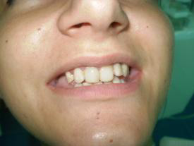
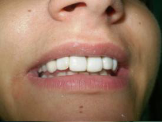
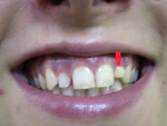
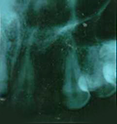
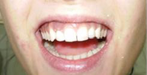
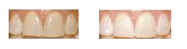
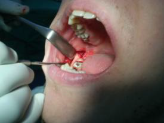
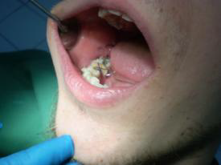
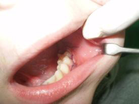

specialist of oral surgery
St. Azize Šaćirbegović bb, Sarajevo;
Gsm.: 00 387 61 37 49 67; Tel: +387 (0) 33 64 50 04;
E-mail: amraamric@hotmail.com

Dentistry services
Pod okriljem Privatne stomatološke ordinacije "Amdenta" koju vodi specijalista oralne hirurgije nudimo savremene stomatološke metode i tehnike u oblastima: stomatološke preventive, estetske stomatologije, dječje stomatologije, endodoncije, oralne hirurgije i protetike.
Radimo s pacijentima koji imaju stečeni ili urođeni strah od stomatologa koristeći savremene metode i na tom polju imamo zavidne rezultate, posebno u radu s djecom.
Ovdje našim pacijentima nudimo besplatan pregled, konsultacije ljekara specijaliste i bezbolan tretman.
Vodeći računa o potrebama pacijenata razvili smo saradnju s vrhunskim zubnim laboratorijem.
Jedna od želja nam je da pacijent zajedno s stomatologom učestvuje u izboru optimalnog rješenja. Pri tome Vam nećemo i ne želimo nuditi nemoguća rješenja, već realna i najbolja moguća u konkretnoj situaciji.
Edukacija kadra i korištenje savremenih materijala i metoda jedino mogu rezultirati zadovoljstvom pacijenta.
Radeći kontinuirano na sebi i praćenjem savremenih metoda trudimo se da pacijentima osiguramo tretman koji kvalitetom ne zaostaje za svjetskim standardima.
Inovativnost u poslu direktno je uslovljena očekivanjem naših pacijenata, jer njihove zahtjeve nastojim realizirati pomicanjem granica kvaliteta usluge u stomatologiji i prihvatljivim cijenama.
Težište našeg rada je znanje jer samo znanjem i dugogodišnjim iskustvom u praksi možemo biti konkurentni i tako očuvati povjerenje naših pacijenata.
Estetika je važna ali mi želimo da estetska rješenja budu istovremeno i funkcionalno najbolja.
Kome ćete dati svoje povjerenje – Vaš je izbor. Uvjereni smo da naši pacijenti odlazak kod stomatologa ne doživljavaju sa osjećajima straha i nelagode, već na tretmane dolaze kao naši prijatelji!
ESTETSKA STOMATOLOGIJA
Vrlo dinamična grana stomatologije u prvom redu zbog novih materijala koji se pojavljuju na tržištu. Koristimo kompozitne materijale visokog kvaliteta koje potpuno odgovaraju prirodnoj boji zuba: Estetski ispun I, II i II klase i kompozitni veneersi...
|  |  |
| Klinički izgled prije | kompozitnih veneers |
PROTETIKA
Nudimo vam sve vrste mobilnih i fiksnih protetskih radova uključujući najnovije tehnike u ovoj oblasti.
|  |  |
| Klinički izgled mliječnog zuba i RTG prikaz nedostajućeg stalnog zametka | |
|  |
| Izgled nakon protetske rehabilitacije |
IZBJELJIVANJE ZUBA
Izbjeljivanje zuba vršimo materijalima koji omogućavaju izbjeljivanje do četiri nijanse uz minimalnu osjetljivost zuba.
|  |
LIJEČENJE PARODONTOPATIJE
Zavisno od faze bolesti terapijske mjere uključuju: liječenje džepova koje provodimo u najmanje tri tretmana ili hiruška intervencija na oboljelom parodoncijumu.
ORALNA HIRURGIJA
Hirurškim putem odstranjujemo poluimpaktirane zube.
|  |  |
|  | |
bos|eng